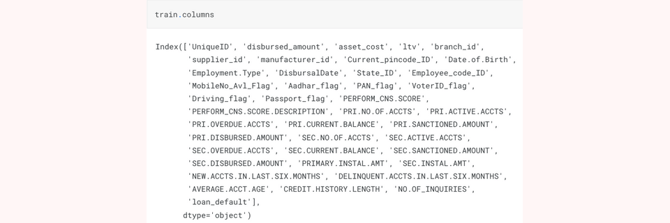
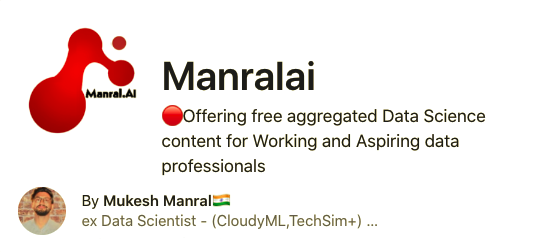

POC's
1.Resume with Business for Edtech
Educational technology institutions have experienced significant financial losses as a result of learners discontinuing their enrollment and transferring to other institutions.
This is often attributed to a lack of personalized track and resume-making capabilities offered by the institution.
Vision:
- Base on My vision which is to develop a Resume Parser, which would be beneficial for both Educational Technology companies and learners by providing a personalized track and resume-making and refining capabilities.
Problems:
- Aspiring and working professionals in the field of data science often lack self-awareness of their skill deficiencies, making it difficult for them to identify areas for improvement
- Educational technology companies are offering expensive modules, despite a lack of understanding of which specific skill areas learners are deficient in, which results in a lack of targeted and effective instruction
Business:
- Will dicuss more onece I will get a call from your side.
Data Collection:
- Data Source-1 ==> Real resume Archive
- Data Source-2 ==> Particular Edtech company courses link
Data Features:

Code Link
ML | DL Project's

1.Vehicle Loan Defaults
Financial institutions have seen significant losses due to default of vehicle loans.
This has led to tightening up of vehicle loan underwriting and increased vehicle loan rejection rates.
Need for a better credit risk scoring model is also raised by these institutions.
This warrants a study to estimate determinants of vehicle loan default.
AIM:
- A Financial institution want me to accurately predict probability of loanee/borrower defaulting on a vehicle loan in first EMI on due date
Following Information regarding loan and loanee are provided in data set:
- Loanee Information-(Demographic data like age, Identity proof etc)
- Loan Information-(Disbursal details, loan to value ratio etc)
- Bureau data & History-(Bureau Score, number of active accounts, status of other loans, credit history etc.)
Data Collection:
- Data Source-1 ==> Collected Lonee Information
- Data Source-2 ==> Collected Loan Information
- Data Source-3 ==> Bureau Data and Credit History
Data Features:
Code Link
Youtube
I am making a concerted effort to disseminate aggregated knowledge, free of charge, to both aspiring and experienced professionals in the fields of data science and Artificial Intelligence.
Channel_Link
Blog

I frequently compose and publish aggregated content, utilizing the process of writing as a means for documenting and disseminating my knowledge and insights pertaining to the field of Artificial Intelligence.
About Me

Data Scientist with 1.6 years of proven experience working in intersection of machine learning, deep learning-computer vision. Worked in team of 8 to 12 team members and played a big role in providing data-driven insights for early-stage technology companies..
Curiosity, Intellectual agility, Statistical fluency, Research stamina, Scientific rigor and Skeptical nature. I’m an inquisitive learner passionate about leveraging the power of data and financial numbers to extract quintessential insights to solve real-world problems✨✨✨
Skills
- Python
- Machine learning [ scikit-learn, Logistic/Linear Reg, Trees ... ]
- Deep Learning(computer vision) [ TensorFlow & Keras, opencv, CNN, Faster CNN, VGG, RESNet ... ]
Contact
I hold office 9 am - 7 pm IST all days of week. Please leave a mail.
email
mukeshmanral777@gmail.com
Phone
+91 8384801974
Links